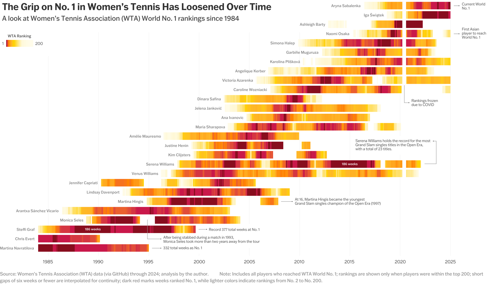
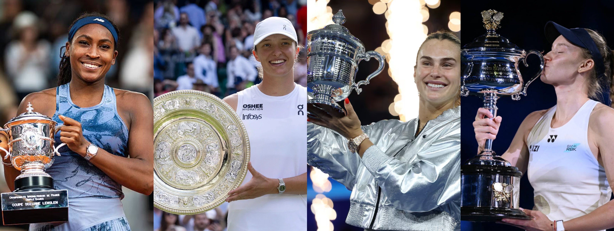
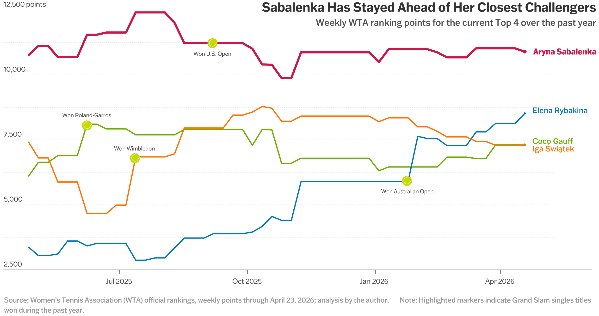
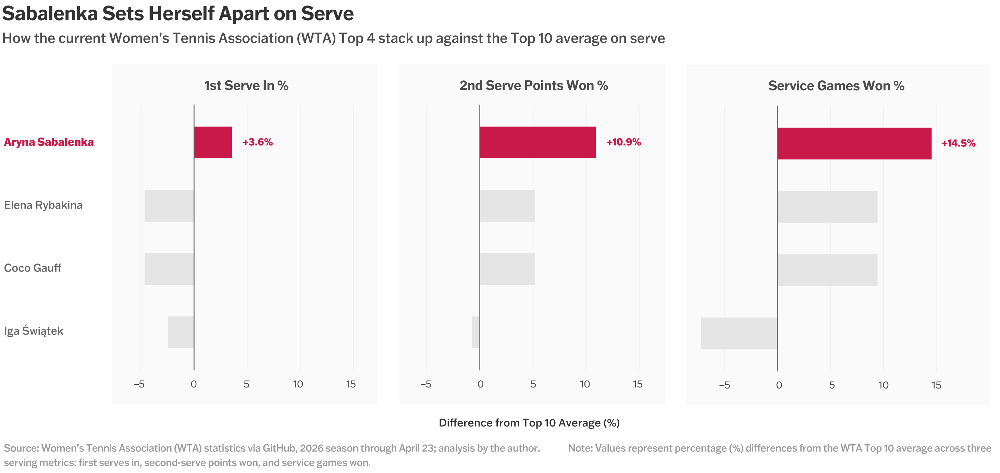
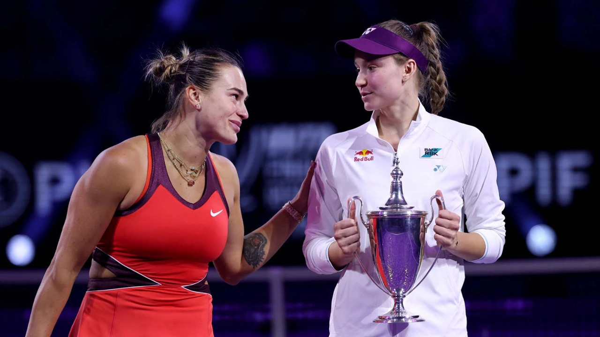

The clay-court swing is currently underway in the tennis world, and so far, it’s already shaping up to be one of most interesting seasons in recent history. Already out of the Madrid Open are 9 of the Top 10 players, including defending champion Aryna Sabalenka and the “Queen of Clay,” Iga Świątek. However, Sabalenka has still maintained a firm hold on World No. 1, nearing 80 total weeks at the top and marking the 10th-longest consecutive streak at No. 1 in women’s tennis, tied with Swiss legend Martina Hingis.
Yet Sabalenka’s reign comes at a fascinating time in women’s tennis, where dominance still exists, but the road to World No. 1 has become increasingly crowded.

There was once a time when dominance at the top of women’s tennis felt almost certain. Martina Navratilova, Steffi Graf, and Serena Williams did not simply reach the summit. They ruled from it, with stretches at No. 1 lasting years and enormous gaps separating them from the rest of the tour. Dominance was clear and enduring. But today, women’s tennis looks very different.

The grip on No. 1 has loosened over time, with the modern tour featuring a greater variety of playing styles than ever before. Power players, crafty all-court shotmakers, and rising young stars all coexist at the top of the game. In any given tournament, a Top 5 player can be knocked out in the race for another title. Just look at Hailey Baptiste pushing Aryna Sabalenka, or Anastasia Potapova taking down Elena Rybakina at the Madrid Open. More than ever, the idea of one player ruling uncontested feels increasingly rare, especially compared with the men’s tour, where a “Sincaraz” final feels more predictable than not.
And yet, in the midst of it all, Sabalenka has managed to separate herself and build a commanding lead at the top.

What makes Sabalenka’s hold on No. 1 feel especially impressive is that her closest challengers have hardly stood still. Over the last year, each of the current Top 4 has captured a major title. Gauff claimed the French Open, Świątek captured Wimbledon, Rybakina most recently won the Australian Open, and Sabalenka added a second consecutive US Open title to her resume. By Grand Slam count alone, the top of women’s tennis looks evenly split.
But rankings are not just built on short bursts of brilliance alone. They are built on consistency, and that is where Sabalenka has been unmatched.
If there is one statistic that best explains her rise to the top, it is her serve. Compared with both her closest challengers and the WTA Top 10 average, Sabalenka sets herself apart across major serving metrics, specifically first-serve percentage, second-serve points won, and service games held. In each category, she performs comfortably above the elite baseline. Put simply, Sabalenka starts points better, survives pressure better, and gives opponents fewer openings to break her. And across a season, that advantage compounds.

Reliable serving means shorter service games, less energy spent, fewer momentum swings, and more control in tight matches. In fact, so far in 2026, Sabalenka is 26–2 and has won 6 of the 8 tiebreaks she has played. And that consistency has carried across her entire game. For a player once riddled with double faults and unreliable serving, this transformation has been nothing short of remarkable. What was once her biggest weakness has become one of the most dangerous weapons in both her game and women’s tennis.
Still, no reign lasts forever.
If there is one player best positioned to challenge Aryna Sabalenka next, my guess is that it may be Elena Rybakina. Her rise over the last year has been steady and clear. While others around her have fluctuated, Rybakina’s trajectory has consistently pointed upward. Her game is built on many of the same ingredients that make Sabalenka dangerous: an elite serve, effortless power, and the ability to take time away from opponents with flat, penetrating groundstrokes.

More importantly, her game translates across surfaces. She is dangerous on hard courts, lethal on grass, and increasingly comfortable on clay. When healthy, she looks every bit like a future No. 1. But the question is not whether Rybakina has the talent. It is whether she can sustain it.
But for now, Sabalenka’s throne remains untouched. In an era where women’s tennis has never felt more open, her ability to stay one step ahead of a crowded field may be the clearest sign of dominance. The grip on No. 1 may have loosened over time, but at this moment, Aryna Sabalenka still has the firmest hold on it.
This website was created as part of a final project for Data Visualization at Brown University, taught by Reuben Fischer-Baum.
A special thank you to Reuben for being an incredible instructor. I would also like to thank Jeff Sackmann’s GitHub repository, Tennis Abstract, and the Women’s Tennis Association (WTA) for providing much of the data used in these visualizations.
All visualizations were created using R and Adobe Illustrator.